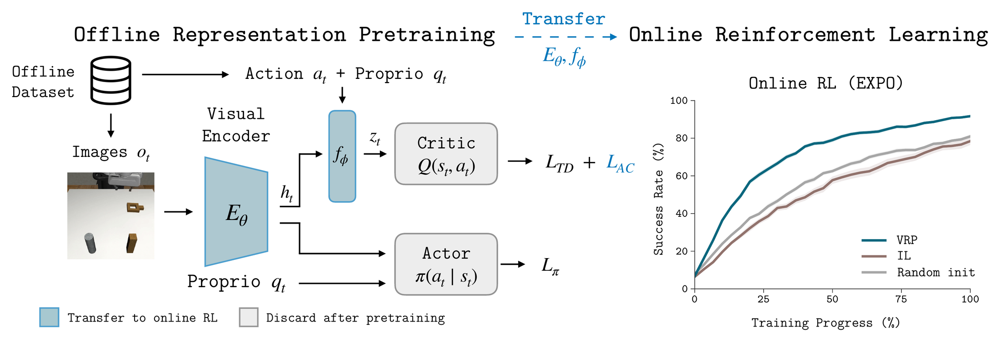
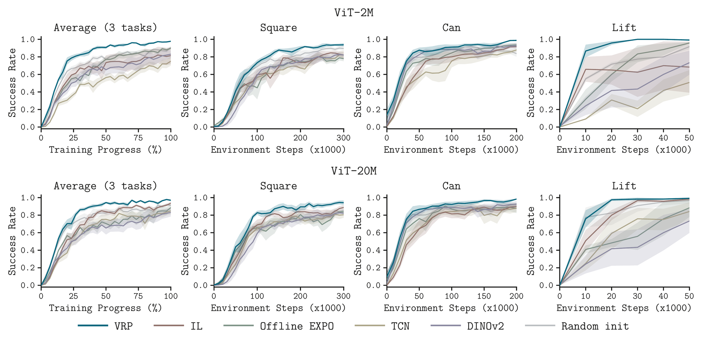
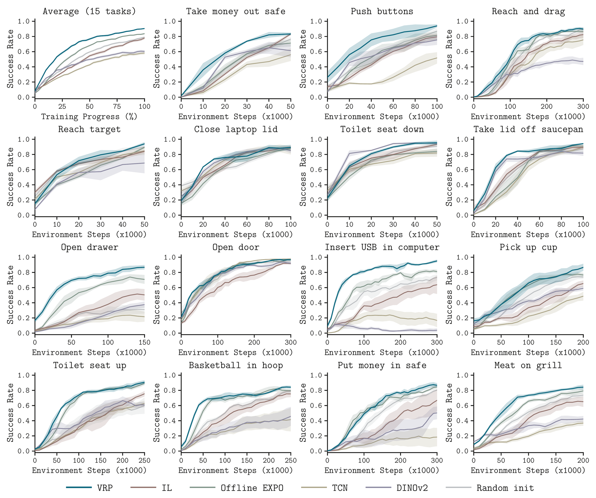
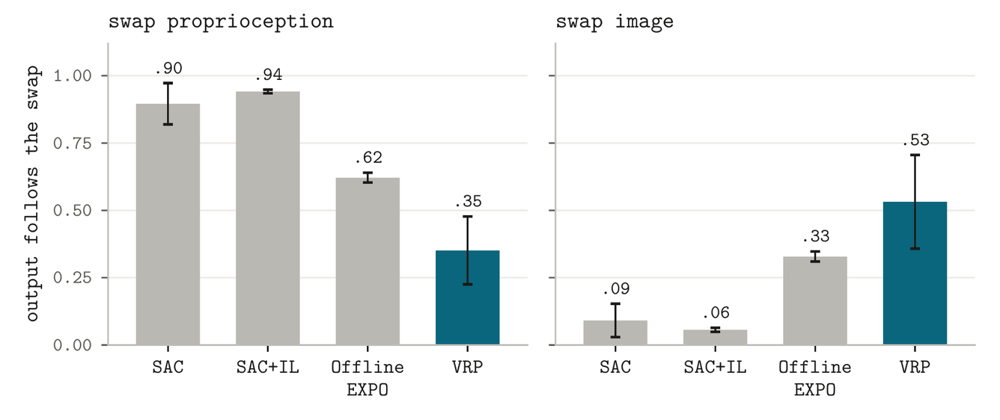
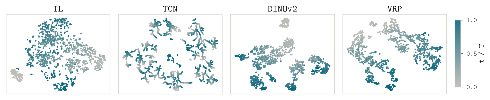
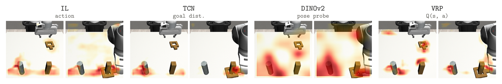
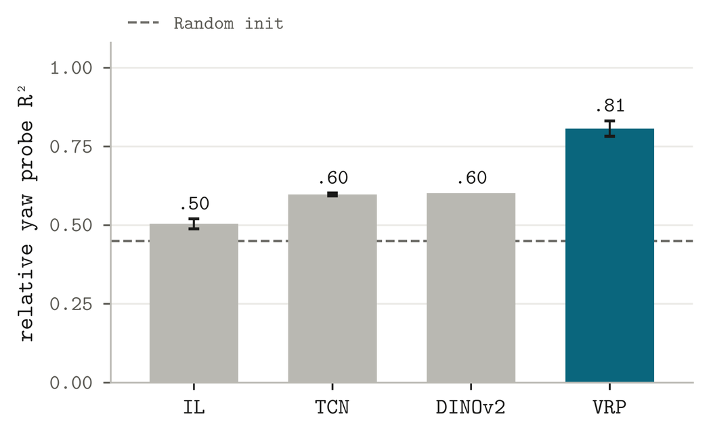

Can we pretrain visual representations that are better suited to RL fine-tuning?
Visual representations play a central role in the sample efficiency of vision-based online reinforcement learning (RL), yet current methods mostly initialize the encoder from general-purpose vision models or from imitation learning. We find that these pretrained representations often fail to help online RL, performing similarly to or worse than a randomly initialized encoder.
We present Value Representation Pretraining (VRP), a visual representation pretraining method for online RL. VRP combines TD learning with an action-contrastive loss to learn representations that capture task progress and how each action changes the expected future return, information the critic needs during fine-tuning. With the off-policy algorithm EXPO, VRP improves sample efficiency over a randomly initialized encoder by 2.08× across 3 robomimic and 15 RLBench tasks, whereas encoders pretrained with non-RL methods like imitation learning, time-contrastive learning, or DINOv2 provide little to no improvement. With the on-policy algorithm PPO, VRP also achieves the highest average success rate on robomimic, raising it from 86.4% to 96.8% over random initialization.
Offline value learning transfers through its representation, not its Q-values.
Pretrained Q-values grow stale as the policy improves, but features that track task progress and rank actions stay useful. VRP pretrains a soft actor-critic offline on the same small set of successful demonstrations used for fine-tuning, and adds a loss that forces the critic to look at the scene.
Every method uses the same online RL algorithm and differs only in how the encoder is initialized.


Critics and representations on robomimic square, compared across pretraining objectives.
We swap either the proprioception q or the image latent between demo states and measure how much Q follows the swap. SAC and SAC+IL critics follow q almost entirely and barely respond to the image, and offline EXPO still relies mainly on q. VRP's critic relies more on the image than on proprioception.

In the IL embedding, observations from different stages of the task are interleaved. DINOv2 clusters do not follow task stage, and TCN separates individual trajectories. VRP arranges observations along a smooth progression from early to late timesteps shared across episodes.

IL attends to the object but captures little about its relation to the gripper. DINOv2 spreads attention across every object in the scene. VRP concentrates on the object and its contact with the gripper.

A linear probe on VRP features predicts the object's yaw relative to the gripper with R2 = 0.81. IL reaches only 0.50, barely above a randomly initialized encoder at 0.45. This object-centric information is what the critic needs to judge which actions lead to success.
